VIPER FreeSpace demand analysis
Function
enter
Sensor input
|
Camera Type |
Front Wide(Main) |
Front Tele(Narrow) |
Wing Cam(Side) |
Rear |
|
Imager/CMOS |
OV OX08B |
OV OX08B |
OV OX03C |
OV OX03C |
|
Number |
1 |
1 |
2 or 4 |
1 |
|
FOV(degree) |
H-120/V-65 |
H-30/V-14 |
H-100/V-65 |
H-60/V-35 |
|
Resolution |
3840*2160 |
3840*2160 |
1920*1280 |
1920*1280 |
Calibrate input
1. CAM inside and outside ginseng
2. Local Location POS Information
Output
1. For each lane, refer to the central line of the lane on both sides of the lane on both sides of the lane.
2. Each central line related output is as follows:
The central line direction (the direction of the feasible driving direction of the lane) is expressed from the order of the point, that is, the key points of the central line are arranged along the driving direction
The left and right lanes binding in the centerline
Before and after the center line
The lane attributes, such as motor lanes, non -motorized lanes, parking lanes, prohibited areas, etc., virtual lanes, how to get out?(Priority to ensure the motor vehicle lane KPI, the non -motor lane category is accurate, other categories KPI is uncertain))
OPL4: The central line attribute classification (for example, to distinguish the diversion zone), how many categories and corresponding classification performance indicators to be divided; at present, this attribute cannot be exported at the central line level of the lane line.
3. The scope of the central line labeling:
If there is a left and right Lane Boundary, the corresponding center line will be output. If there is no left and right Lane Boundary, the left and right central lines will not be output.
The central line of the non -driving area, provides a category that cannot be driving areas, expands in functional analysis
Functional Analysis
Lane -free scene scene
Non -intersection: out
intersection:
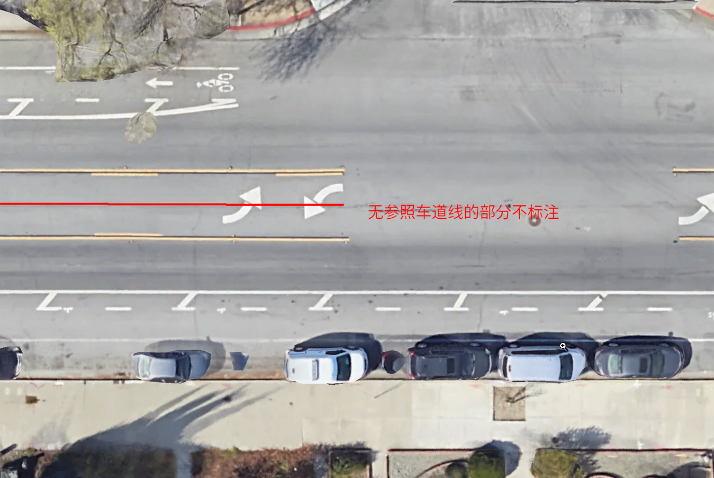
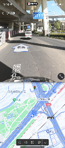

The central line and the lane line are bound to the lane line, and there is no lane line and there is no central line.
The length threshold of the "effective area" is preliminarily set to 5m?
Non -motorized lane


1. Does the lane line (sticker along the path) of the Non -Motorized Lane on the right of the figure need to be output?If the output is needed, is there any accuracy requirements?To be determined
2. Non -Motorized Lane center line use?There may be no need
Parking space line scene
Will the parking space line with the same lane use the blue central line?
Do you need to output the left and right lanes?
The marking supplier cannot provide lane -level marks, and can only provide Polygon
How to use the parking space line PNC
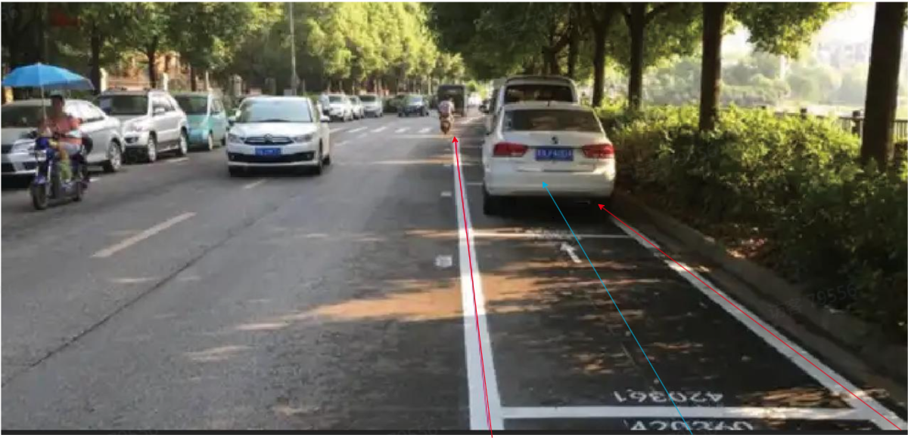
OPL7: Non -Motorized Lane central line needs to be confirmed, but the roadside line on the inside of the road is required; if the roadside line is blocked by flower beds or fences, no brain is supplemented; performance indicators are to be determined
Need to be close to the side of the driving direction, whether the centerline of the parking space and the other side of the parking space need to be confirmed
Ramps
Ordinary RAMPS
Perception cannot be output according to the actual edge curvature, but the status quo perception is to output according to the curvature of the actual edge.
Perceives need at least output Split points
According to the traffic rules, the central line is required.You need to determine the needs of perception on the system
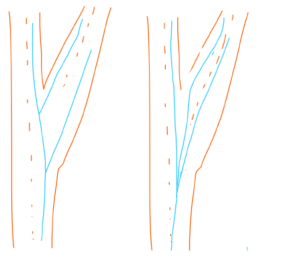
com.atlassian.confluence.content.render.xhtml.XhtmlException: Missing required attribute: {http://atlassian.com/resource/identifier}value
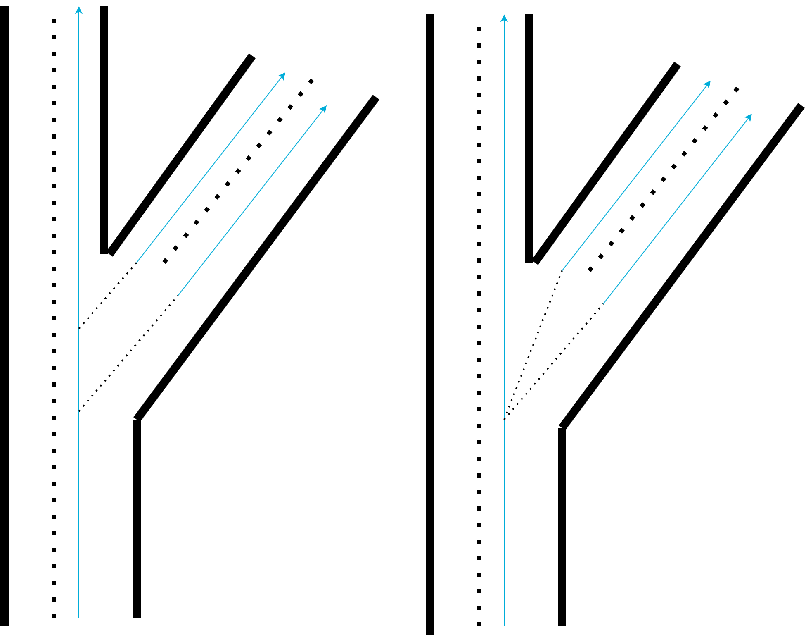
(Reference from the needs of the system) If there are multiple LANE in the ramp, you need to avoid connections in the form of the left figure (too close to the boundary), use the connection of the type right type type as much as possible
Please define the label rules of the following cases
OPL3: For the central line of the ramp scene, the fork point, and how to mark the central line between the bifurcation points, the unique rules of uniformity in the similar scenario need to be used in similar scenarios.Affects the rules!Intersection
|
cam figure |
MAP label |
illustrate |
|
|
|
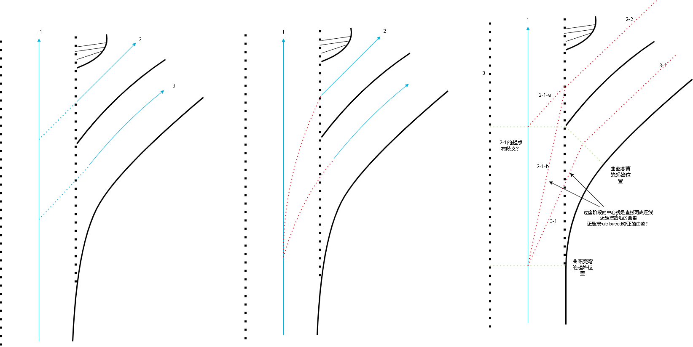 |
|
|
|
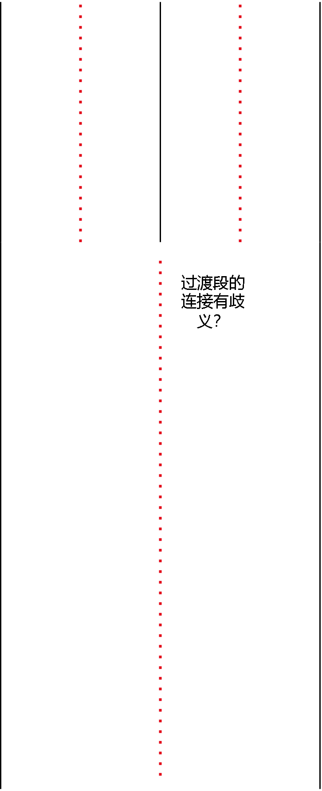 Ultra -wide lanes, long tail problems, output unstable.Is it encountered in the previous test question.@Yuchen |
|
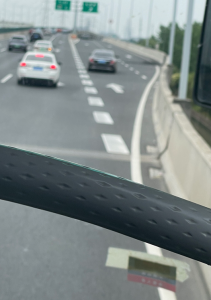 |
|
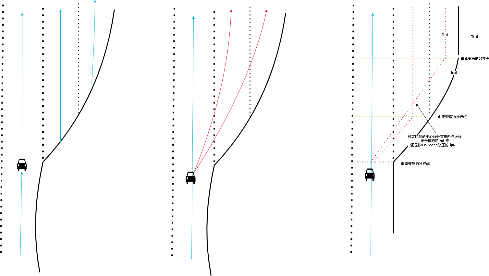 |
|
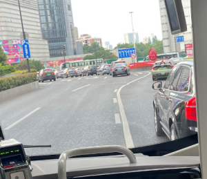 |
|
And the picture above is similar |


Diversion area scene
The output scheme of the central line of the diversion area is 1,2 as shown in the figure
The way to output 2 from the principle will be very inconsistent
From the demand of PNC, the central line and cannot cross the area and cannot cross the area. In terms of visual perception, there are two -sided lane lines and central line binding.
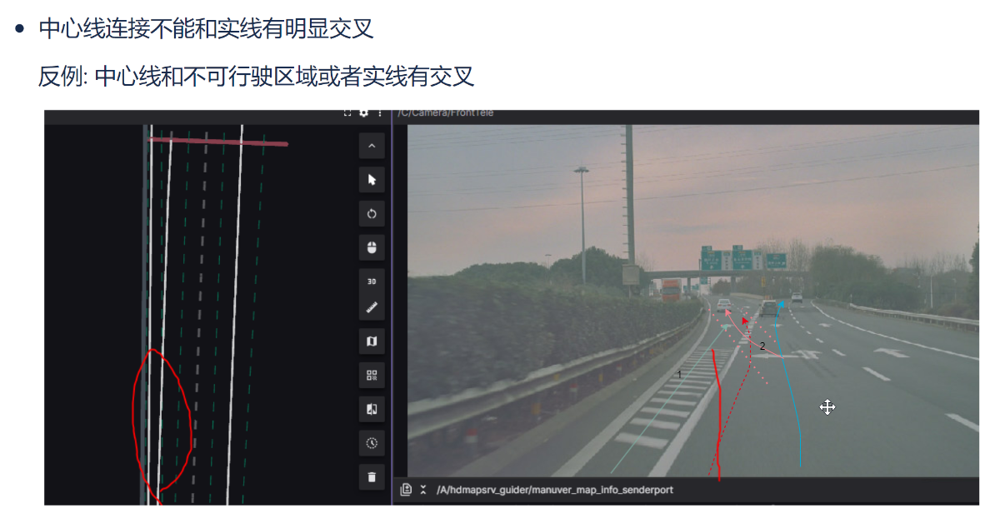
Whether the figure below is also a lane
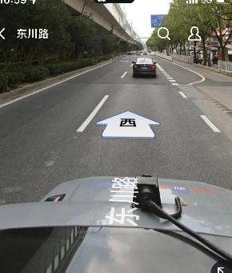
Turn right in the crossroads Guide Do you need output?(?) 
The centerline is relatively close to Boundary.
1. Feel the correct position of the central line in the geometric sense. If it is close to the position of Boundary, how to deal with it?
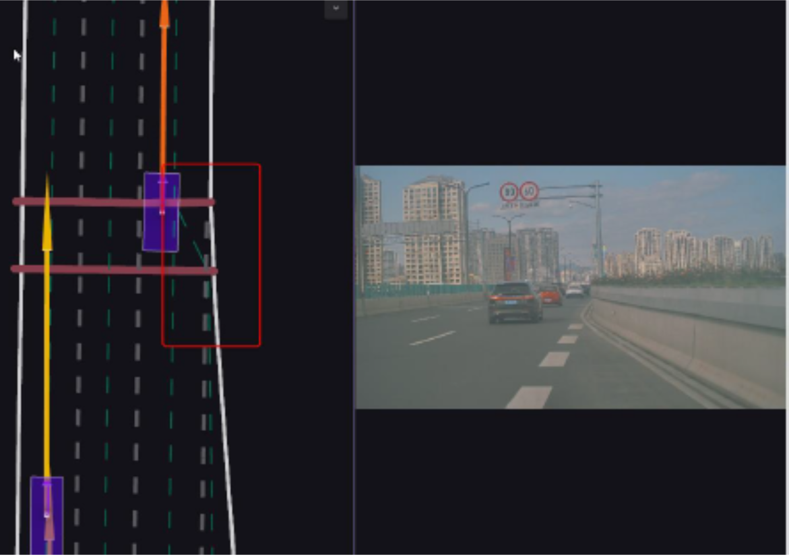
Merge split centerline fork smoothness
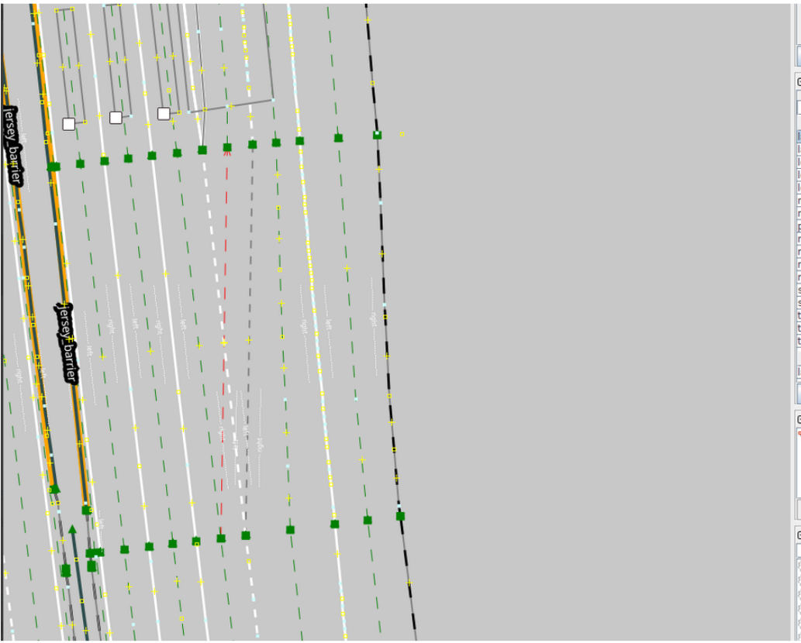
Contrary to example: Lane Split is too late, causing the central line to transition is not smooth;
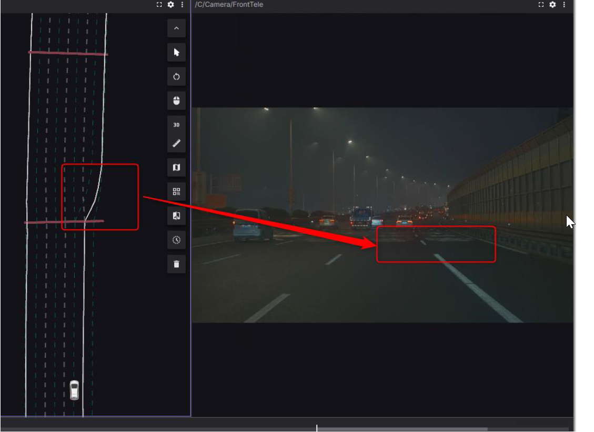
Contrary to example: Lane Split is too obtrusive, the Split curl rate has changed too much
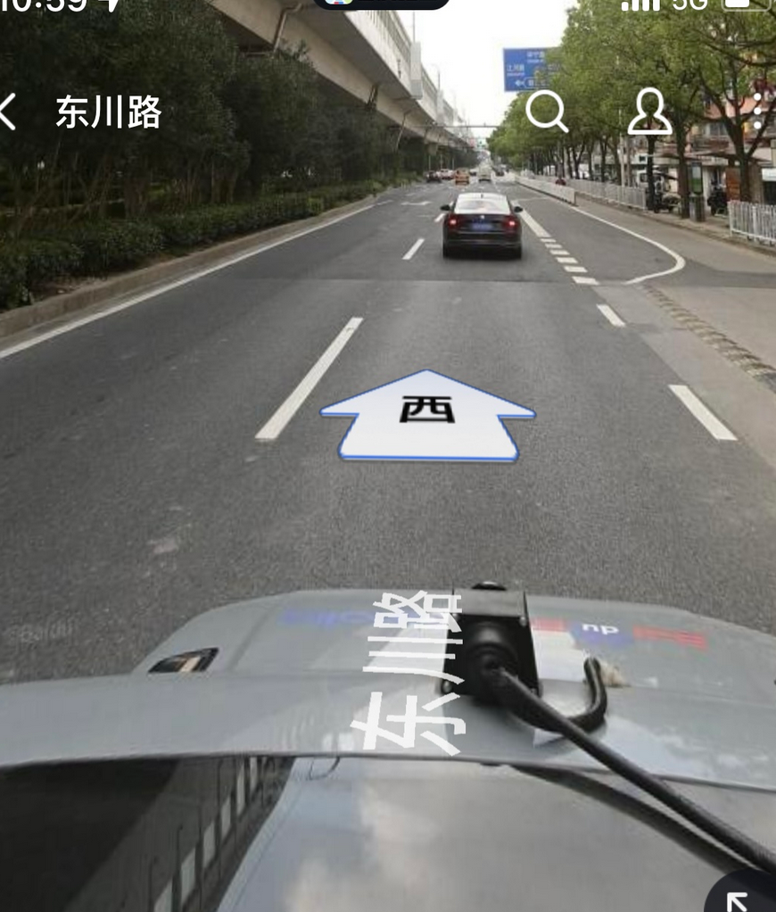
The characteristics of the anti -example vision are how to deal with the situation of large curvature changes?
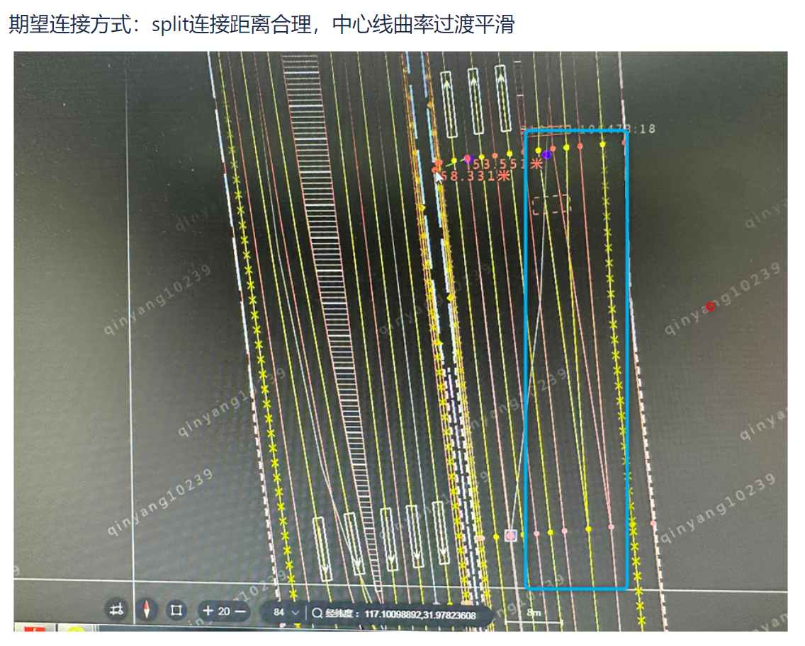
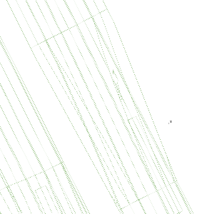
After 19th june bev_drv_Static needs review Series2-CENTER LINE
Discussion on whether to supplement the virtual lane (virtual center line)
Virtual lane (central line) refers
If you need to output virtual lanes, perception should be strongly dependent on lane -level map prior information.
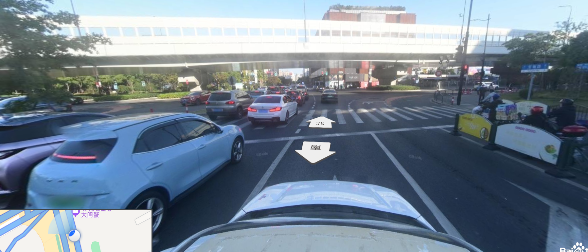
Most complex intersections or intersections with obstacles such as isolation bands are difficult to determine whether there are lanes/and corresponding lanes through perception images.(If the person is marked, the person cannot Only through the picture Draw a virtual lane, and there is no correspondence with the default perception)
If there is no lane -level map priority (ADAS/SD+ MAP), it is difficult to learn through the network (it may be concentrated in a limited data set).Even if the virtual lane can be output, the reference value is not great.
In addition, when there is no lane -level map prior data for the time being, can it be binded into a Plugin first to test the Function and lane -level map that output virtual lane output.That is, the current Baseline version is not supported, but it can be compatible with this Plugin in the future.It maintains the unity of the perception plan, but also takes into account the focus of different stages.
TIPS: We can try the network trained by the first stage of GDATA Jiading intersection data to see the effect at other intersections.
(If there is no lane -level map priority for the time being) You can clearly see that the target enters the lane, you can consider output the corresponding virtual lane
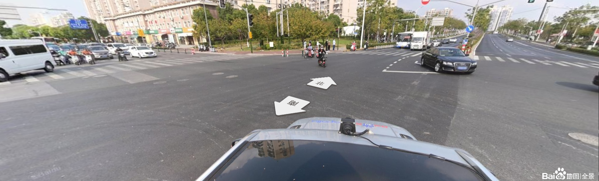
Assume that before the car turns left, before entering the intersection, if there is no corresponding map priority, it is difficult to determine whether there is a lane/corresponding lane number after the left turn.However, when the car enters the intersection and can see the road after the left turn, you can consider output the corresponding virtual lane.
In practice, whether the downstream can be considered in the intersection in a certain way. When the perception can output the high -littering of the high -litter to enter the virtual lane corresponding to the lane and then, it is corrected according to the perception results.
In actual operation, can Auto Labelling generate the corresponding true value?
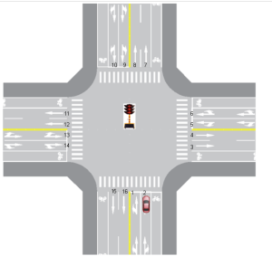
Auto Labelling has three solutions: 1. Use Rule-Based (Bessel curve) one after another to form a virtual lane.2 Use Traffic Flow to fit the lane trajectory. 3 Project with high -precision maps.
If it is a scheme 1. Theoretically does not need Data-Driven to learn.
If it is a solution 2, As shown in the figure, there are at most 32 virtual lanes at the theoretic intersection ( 2 theoretically, you can switch to 3 and 4 ), If each virtual lane needs to be fitted with three corresponding auto labelling driving trajectories, a total of 96 times to cover the intersection. Suppose it takes three minutes at a time, and it takes at least 5 hours to cover the intersection.
If you press the requirements of the game, there may be only a solution 3 that is feasible.The implementation of Plan 3 needs to be confirmed.And scheme 3 and solution 1 cannot be mixed, which will cause inconsistency of true values.
According to the current requirements of SF, there may be risks to generate true values.Need a clear rule of high -precision maps.
Discussion on whether you need brain supplementation/or low visible lanes
If you need to output blocking/or visible low lanes, perception should be strongly dependent on the lane -level map prior information.
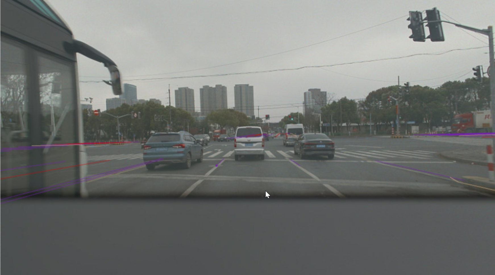
It is difficult to determine whether there are lanes/and corresponding lanes by perception of the obscure position. (If the person is marked, the person cannot Only through the picture Draw a lane that is blocked, and there is no corresponding ability to perceive the default)
If there is no lane -level map priority (ADAS/SD+ MAP), it is difficult to learn through the network (maybe it may be overfit at a limited data set).Even if it can output the obscure lanes, the reference value is not great.
In addition, from the perspective of perception algorithm, the lane and passive obstacles outside the hard isolation belt (the bus in the picture above) are blocked by One task EssenceIt is difficult to distinguish from the picture itself The lane outside the hard isolation belt does not require output and The lane covering the passive obstacle needs to be output 。
In addition, when there is no lane -level map prior data for the time being, can it be tied to a Plugin first to be tied to a Plugin.That is, the current Baseline version is not supported, but it can be compatible with this Plugin in the future.It maintains the unity of the perception plan, but also takes into account the focus of different stages.
Can you consider the lane modeling tracking of Long Time Window
If you use the perceptual model to do Long Time Window, the training overhead is too large.If you make a single frame or a short time window fanion (such as 2Hz fusion 1S historical information), the obscure lane does not have the Feature response in the picture, which will cause the overall performance to concentrate in the training concentration.